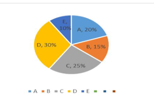
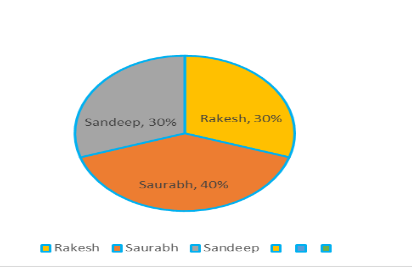

Mohan,Sohan and Sita start from the samepl aceand travel in the same direction at the spead of 20 kmph,30 kmp hand 60 kmph respectively.Sohan start s two hours after Mohan.If Sohan and Sita ovetr take Mohan at the same time,how many hours after Mohan did Sita start? A) 4 hours B) 3 hours C) 6 hours D) 5.5 hours E) 5 hours
The work done by a man, a woman and a child are in the ratio of 3:2:1. There are 8 men, 12 women and 20 children in a factory. There weekly wages amount to Rs 884, which is divided in the ratio of the work done by the men,women and children. What will be the wages of 10 men, 20 women and 25 children for a week ? A) Rs 1485/- B) Rs 1580/- C) Rs 1385/- D) Rs 1235/- E) Rs 1675/
A builder appoints three construction workers Akash, Sunil and Rakesh on one of his sites. They take 20, 30 and 60 days respectively to do a piece of work. How many days will it take Akash to complete the entire work if he is assisted by Sunil and Rakesh every third day? A) 10 days B) 15 days C) 25 days D) 30 days E) 45 days
Please solve the elementary problem: 98/3 % of 769.002 + 24% of 160.89 – 67.9900=? A) 220.00 B) 224.00 C) 225.00 D) 226.00 E) 227.00
While going to office, Ramesh travels at a speed of 30 kmph and on his way back, he travels at a speed of 45 kmph. What is his average speed of the whole journey? A) 45 kmph B) 36 kmph C) 42 kmph D) 40 kmph E) 35 kmph
Directions : Refer to the below pie-chart and answer the given questions The following pie-chart refers to the total number of buyers(male+female) in five different shops(A,B,C,D and E) in the month of July. Total number of buyers in five shops in July= 480 
The number of male buyers in shop C is equal to the number of male buyers in shop D. If the total numer of female buyers in both shops C and D together is 192 then what is the number of male buyers in shop C? A) 50 B) 40 C) 36 D) 48 E) 24
Directions : Refer to the below pie-chart and answer the given questions The following pie-chart refers to the total number of buyers(male+female) in five different shops(A,B,C,D and E) in the month of July. Total number of buyers in five shops in July= 480
What is the difference between the number of buyers in shop B and that in shop E? A) 24 B) 42 C) 12 D) 36 E) 48
Directions : Refer to the below pie-chart and answer the given questions The following pie-chart refers to the total number of buyers(male+female) in five different shops(A,B,C,D and E) in the month of July. Total number of buyers in five shops in July= 480
What is the central angle corresponding to the number of buyers (male+female) in shop B?(in degrees) A) 64 B) 48 C)52 D) 54 E) 36
Directions : Refer to the below pie-chart and answer the given questions The following pie-chart refers to the total number of buyers(male+female) in five different shops(A,B,C,D and E) in the month of July. Total number of buyers in five shops in July= 480
In shop A, in December, the number of female and male buyers grew by 25% and 50% respectively from that in July. In December, what was the number of male buyers in shop A. if the ratio of the number of female to male buyers was 5:2? A) 36 B) 48 C) None of those given as options D) 54 E) Cannot be determined
Directions : Refer to the below pie-chart and answer the given questions The following pie-chart refers to the total number of buyers(male+female) in five different shops(A,B,C,D and E) in the month of July. Total number of buyers in five shops in July= 480
What is the average number of buyers(male+female) in shops C,D and E? A) 108 B) 112 C) 104 D) 106 E) 124
Directions : Refer to the below pie-chart and answer the given questions The following pie-chart refers to the total number of buyers(male+female) in five different shops(A,B,C,D and E) in the month of July. Total number of buyers in five shops in July= 480
3/4 of the number of buyers in shop E are females. Then find out the number of male buyers in shop E. A) 24 B) 16 C) 18 D) 12 E) 36
In a shop, the profit is 320% of the cost. If the cost increases by 25% but the selling price remains constant, find out approximately what percentage of the selling price is the profit? A) 30% B) 70% C) 100% D) 250% E) 150%
Two container P and Q have mixture. In P three liquid A, B and C is mixed in a ratio of 2 : 1 : 1 and in Q two liquid B and C is mixed in ratio of 3 : 2. Mixture of both container P and Q poured into third container X which show the quantity ratio of A, B and C is 8 : 13 : 10. Find the quantity in Q is what % less or more than the quantity in P A) 3.25% B) 12.50% C) 6.25% D) 11% E) 25%
A and B enter into a partnership business and decided to distribute 60% of profit as per (investment x time) ratio and rest in the ratio of 7:10. If the amount invested by A is 25 % more than B and B withdraw half of his total investment after 9 months. Find the profit distribution ratio of A and B according to given condition at the end of a year A) 43:44 B) 44:41 C) 48:43 D) 49:47 E) None of these
Average weight of a group is 20 kg. When 2 people include in the group average weight becomes 22 kg after that when 4 another people removed from the group, having weight half of the weight of 2 person included previously, average weight become 25. Find the strength of group initially A) 18 B) 20 C) 22 D) 14 E) 16
A shopkeeper marked up the price of a mobile phone by 40% of its cost price, if he increases the discount from 5% to 10%, the profit would decrease by 1400 Rs. How much profit shopkeeper would earn if he gives a discount of 20% on the marked price ? Assume that, he calculates discount only on MRP A) Rs 1800 B) Rs 2200 C) Rs 1200 D) Rs 2800 E) Rs 2400
A man invests Rs. 1,200 at 10% p.a. At the end of the year he withdraws 30% of total amount and pays Rs. 24 as transaction fee. At the end of 2nd year he withdraws 30% of the amount and pays Rs. 93 as transaction fee. What is the balance at the end of the third year? A) Rs 660 B) Rs 825 C) Rs 500 D) Rs 770 E) None of these
Mayank borrowed Rs. 48000 from a bank at 12.5 % per annum compound interest at the end of 1st, 2nd and 3rd year, he paid 14000, 13000 and 16000 respectively. If he wanted to clear his loan at the end of 4th year, what would he pay at the end of the fourth year to clear his loan ? A) Rs 21000 B) Rs 22500 C) Rs 16800 D) Rs 26000 E) None of these
A man invested an amount into three schemes P, Q and R in the ratio of 5 : 6 : 9 at the rates of 20%, 15% and 10% respectively. Schemes P and R offered compound interest annually, while scheme Q offered simple interest annually. Total interest received by man from scheme P and Q together is Rs. 1899 more than total interest received from scheme R after two years. If man would invest total amount on compound interest at the rate of 15% p.a., then find the total interest received by the man? A) Rs 5800 B) Rs 5805 C) Rs 5580 D) Rs 5590 E) Rs 5900
Directions : ‘B’ and ‘C’ together started to do a work ‘X’. After 6 days ‘B’ is replaced by ‘A’ who can do work ‘X’ alone in same time in which ‘B’ and ‘C’ together can do. After 4 days more ‘A’ left the work and remaining work is completed by ‘C’ alone in 2 days. ‘B’ did 33.33 % of work ‘X’ in total. ‘C’ and ‘D’ can complete the same work ‘X’ in 20 days while ‘D’ is 60% less efficient than ‘B’. Efficiency of A, B, C and D remain same for work ‘X’, ‘Y’ and ‘Z’
Find the ratio between work done by ‘A’ in 4 days to work done by ‘B’ in 9 days? A) 3:4 B) 1:2 C) 1:3 D) 2:3 E) 3:1
Directions : ‘B’ and ‘C’ together started to do a work ‘X’. After 6 days ‘B’ is replaced by ‘A’ who can do work ‘X’ alone in same time in which ‘B’ and ‘C’ together can do. After 4 days more ‘A’ left the work and remaining work is completed by ‘C’ alone in 2 days. ‘B’ did 33.33 % of work ‘X’ in total. ‘C’ and ‘D’ can complete the same work ‘X’ in 20 days while ‘D’ is 60% less efficient than ‘B’. Efficiency of A, B, C and D remain same for work ‘X’, ‘Y’ and ‘Z’
Find in how many days ‘A’ can complete another work ‘Y’ if ‘C’ and ‘D’ together can complete work ‘Y’ in 26 days? A) 14.4 days B) 15.6 days C) 18.2 days D) 16.6 days E) 19.5 days
Directions : ‘B’ and ‘C’ together started to do a work ‘X’. After 6 days ‘B’ is replaced by ‘A’ who can do work ‘X’ alone in same time in which ‘B’ and ‘C’ together can do. After 4 days more ‘A’ left the work and remaining work is completed by ‘C’ alone in 2 days. ‘B’ did 33.33 % of work ‘X’ in total. ‘C’ and ‘D’ can complete the same work ‘X’ in 20 days while ‘D’ is 60% less efficient than ‘B’. Efficiency of A, B, C and D remain same for work ‘X’, ‘Y’ and ‘Z’
‘E’ who is 60% more efficient than ‘B’ can complete another work ‘Z’ in 12.5 days. Find in how many days ‘A’ and ‘C’ together can complete work ‘Z’? A) 20 days B) 15 days C) 12 days D) 10 days E) 8 days
Train A running at the speed of 108 km/hr crosses a man, who running in the opposite direction at the speed of 12 km/hr in 7.2 sec. If speed of train A increased by 25% and it takes 48 seconds to cross another train B, which running at the speed of 90 km/hr in same direction. Find the length of train B? A) 280 meters B) 360 meters C) 180 meters D) 160 meters E) 220 meters
A lake in which speed of water current is zero has a stretch of 144 km. Two boats, whose sum of speed in still water is 28 km/hr, starts from two ends of lake. A fish starts swimming simultaneously with one boat toward another boat and reach the second boat in 4 hours and then returns toward first boat and touch it in 48 minutes. Find the speed of fish. A) 12 km/hr B) 16 km/hr C) 24 km/hr D) 40 km/hr E) 8 km/hr
When two ships A & B are travelling in opposite direction crosses eachother in 2 second. Speed of ship B is 50% more than the speed of ship A in still water. On a particular day, ship A was ahead of ship B by 9 meters and both of them were travelling in downstream. If Ship B overtook Ship A in 11 seconds and length of ship B is 54 meters then find the speed of ship A A) 56 m/s B) 36 m/s C) 40 m/s D) 60 m/s E) 18 m/s
Quantity (I)= ‘x’: Veer distributed Rs.80,000 among his wife, two daughter and three sons. His wife got 300% more than the amount every son got. If 30% of the total amount given to the sons then ‘x’ is the amount every daughter got Quantity (II)= ‘y’: Yogesh start a business with Rs 10800. After 4 months veer join him with Rs 37800. After 2 months Amit join them with Rs 28800. After 1 year they got total Rs 54880 as profit. ‘y’ is the share of Yogesh in profit. A)Quantity (I) > Quantity (II) B) Quantity (I) < Quantity (II) C) Quantity (I) ≥ Quantity (II) D) Quantity (I) ≤ Quantity (II) E) Quantity (I) = Quantity (II) or No relation
Direction : Data about investments of different persons is given below. Study the data and solve the questions carefully. → Investment of Neeraj is 50% more than investment of Aman while investment of Neeraj is 25% less than that of Sandeep. Total Investment -= Rs 40000 
Neeraj and Saurabh started a business together. After 8 months of business they invested Rs 1000 per month for every month. If annual profit is Rs 8000 then find Saurabh’s profit out of total profit? A) Rs 2950 B) Rs 4000 C) Rs 5050 D) Rs 4450 E) Rs 4850
Direction : Data about investments of different persons is given below. Study the data and solve the questions carefully. → Investment of Neeraj is 50% more than investment of Aman while investment of Neeraj is 25% less than that of Sandeep. Total Investment -= Rs 40000
Aman and Rakesh started a business together. Rakesh left the business ‘x’ months before the completion of year while Aman increased his investment by Rs 2000 after 8 months and then after 2 months more he increased his investment by Rs 2000 again. If ratio between profit share of Aman and Rakesh is 7 : 8 then Rakesh worked for how many months? A) 8 months B) 4 months C) 6 months D) 2 months E) 10 months
Direction : Data about investments of different persons is given below. Study the data and solve the questions carefully. → Investment of Neeraj is 50% more than investment of Aman while investment of Neeraj is 25% less than that of Sandeep. Total Investment -= Rs 40000
Sandeep and Neeraj started a business together. After 8 months, Neeraj is replaced by another partner, Satish whose investment is Rs 4000 more than investment of Saurabh. If Satish worked for 3 months, then find the profit share of Sandeep if annual profit is Rs 11,500. A) RS 2500 B) Rs 3000 C) Rs 45000 D) Rs 5000 E) Rs 6000
Direction : Data about investments of different persons is given below. Study the data and solve the questions carefully. → Investment of Neeraj is 50% more than investment of Aman while investment of Neeraj is 25% less than that of Sandeep. Total Investment -= Rs 40000
Aman invested his amount in a scheme which after 20% p.a. at C.I. for 2 years while Saurabh invested his amount in a car whose value will depreciate at 20% p.a. every year. Find the total value of amount Aman and Saurabh will have after 2 years A) Rs 31,680 B) Rs. 18,880 C) Rs. 26,880 D) Rs 16,320 E) Rs 22, 880